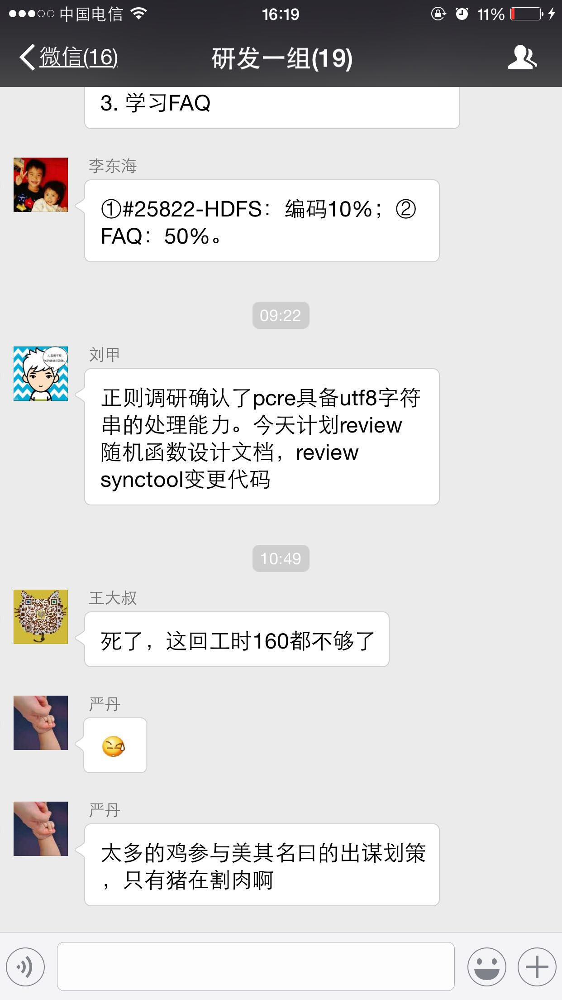
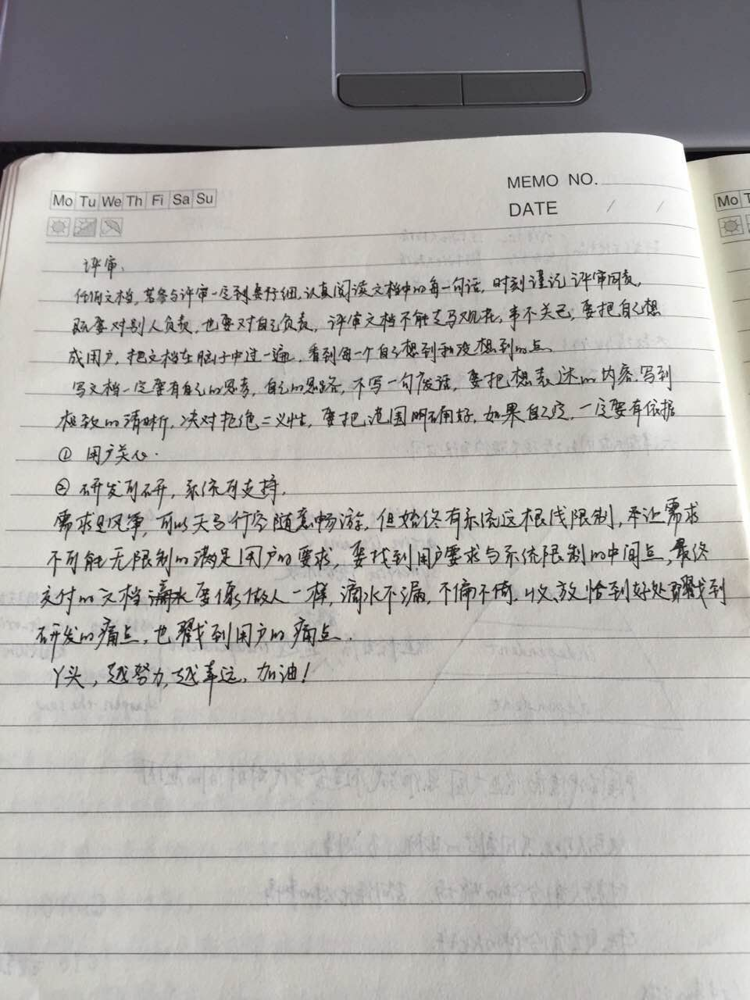

2015-08¶
2015-08-03¶
| 2015-08-03 09:42:52 | 我 | 你今天怎么样 |
| 2015-08-03 09:43:18 | 你 | 没事， |
| 2015-08-03 09:43:23 | 你 | 感冒了就是 |
| 2015-08-03 09:43:32 | 我 | 啊 |
| 2015-08-03 09:43:47 | 我 | 吃药了吗 |
| 2015-08-03 09:50:04 | 你 | 吃了，没事，这点小问题，不算事 |
| 2015-08-03 09:58:17 | 我 | 好吧，自己注意 |
| 2015-08-03 09:58:26 | 我 | 我今天心情不好 |
| 2015-08-03 09:58:41 | 我 | 你别介意 |
| 2015-08-03 09:58:42 | 你 | 怎么了， |
| 2015-08-03 09:58:46 | 你 | 没事 |
| 2015-08-03 09:58:52 | 你 | 怎么了 |
| 2015-08-03 09:59:25 | 我 | 和我媳妇闹别扭 |
| 2015-08-03 10:01:50 | 你 | 怎么了， |
| 2015-08-03 10:01:58 | 你 | 不会是因为我吧！ |
| 2015-08-03 10:02:12 | 我 | 当然不是，别瞎想 |
| 2015-08-03 10:02:23 | 你 | 嗯， |
| 2015-08-03 10:02:35 | 我 | 家里的鸡毛蒜皮的小事 |
| 2015-08-03 10:03:30 | 你 | 哦 |
| 2015-08-03 10:03:36 | 你 | 少管 |
| 2015-08-03 10:03:57 | 我 | 就是嫌我不管了 |
| 2015-08-03 10:04:55 | 你 | 你总也不在家，你就让着点你媳妇呗，你自己都说鸡毛蒜皮的小事了 |
| 2015-08-03 10:05:05 | 你 | 那就费点心管管 |
| 2015-08-03 10:05:20 | 我 | 唉，一言难尽 |
| 2015-08-03 10:05:48 | 我 | 等下午有空再和你说吧，我现在得准备周会 |
| 2015-08-03 10:07:15 | 你 | 嗯，去吧 |
| 2015-08-03 10:07:26 | 你 | 千万别拿工作当借口 |
| 2015-08-03 10:07:41 | 我 | 好 |
| 2015-08-03 10:53:37 | 你 | 看你的脸，拉那么长，开心点呗[微笑] |
| 2015-08-03 10:54:05 | 我 | [微笑] |
| 2015-08-03 10:54:32 | 我 | 一个是心情不好，另一个是肚子有点不舒服 |
| 2015-08-03 10:56:08 | 你 | 哈哈，我好了，换你了 |
| 2015-08-03 10:56:28 | 我 | 是呗 |
| 2015-08-03 10:56:45 | 你 | 忍忍吧 |
| 2015-08-03 14:43:38 | 我 | 挑你喜欢的点吧 |
| 2015-08-03 15:25:06 | 你 | 把严丹电话发给我吧 |
| 2015-08-03 15:26:48 | 我 | 稍等 |
| 2015-08-03 15:27:07 | 我 | 138-2010-7287 |
| 2015-08-03 15:43:33 | 你 | 能接电话吗？ |
| 2015-08-03 15:43:43 | 我 | 可以 |
| 2015-08-03 15:43:45 | 你 | 出来接 |
| 2015-08-03 15:43:50 | 我 | 好 |
| 2015-08-03 16:45:49 | 我 | 明天你打球吗 |
| 2015-08-03 16:50:38 | 你 | 打 |
| 2015-08-03 16:51:06 | 我 | 好吧，我不打了，膝盖疼 |
| 2015-08-03 16:58:03 | 你 | 啊，没事吧，你不去了啊？ |
| 2015-08-03 16:58:25 | 我 | 没事 |
| 2015-08-03 17:00:36 | 我 | 先歇一周 |
| 2015-08-03 17:01:14 | 我 | 最近膝盖有点不舒服，怕厉害了 |
| 2015-08-03 17:05:09 | 你 | 嗯，好，歇吧 |
2015-08-04¶
| 2015-08-04 08:03:11 | 你 | 王洪越这个王八蛋 |
| 2015-08-04 08:03:42 | 我 | 怎么了 |
| 2015-08-04 08:04:30 | 你 | 你到哪了 |
| 2015-08-04 08:04:54 | 我 | 一半 |
| 2015-08-04 08:05:06 | 我 | 他干什么了 |
| 2015-08-04 08:07:29 | 你 | 他把他的文档都加密了，我不能直接复制粘贴 |
| 2015-08-04 08:08:00 | 我 | 真小心眼 |
| 2015-08-04 08:08:07 | 你 | 是呢， |
| 2015-08-04 08:08:39 | 你 | 就整体复制粘贴下就可以了，你说干嘛多此一举啊 |
| 2015-08-04 08:08:42 | 你 | 有病 |
| 2015-08-04 08:08:49 | 我 | 是 |
| 2015-08-04 08:09:14 | 你 | 他咋不转成pdf再发出来 |
| 2015-08-04 08:10:05 | 我 | 是rand的吗 |
| 2015-08-04 08:10:13 | 你 | 是 |
| 2015-08-04 08:10:41 | 我 | 等我到了我看看 |
| 2015-08-04 08:11:09 | 你 | 没事 |
| 2015-08-04 08:13:08 | 你 | 你跟你媳妇好了吗？ |
| 2015-08-04 08:13:48 | 我 | 还行吧，昨天太忙，没怎么联系 |
| 2015-08-04 08:14:26 | 你 | 啊，不联系就代表好了啊？ |
| 2015-08-04 08:14:34 | 你 | 冷处理？ |
| 2015-08-04 08:14:43 | 我 | 差不多 |
| 2015-08-04 08:14:55 | 你 | 我最讨厌冷处理了， |
| 2015-08-04 08:15:01 | 你 | 冷暴力 |
| 2015-08-04 08:15:13 | 你 | 你们男的就爱这套 |
| 2015-08-04 08:15:36 | 我 | 简单一些 |
| 2015-08-04 08:16:34 | 我 | 今天我会给她打电话 |
| 2015-08-04 08:16:38 | 你 | 你觉得这样就没事了吗？ |
| 2015-08-04 08:16:46 | 你 | 其实这样可不好了 |
| 2015-08-04 08:16:49 | 你 | 真的 |
| 2015-08-04 08:16:51 | 我 | 不会 |
| 2015-08-04 08:16:59 | 你 | 可能我气性比较大 |
| 2015-08-04 08:17:22 | 你 | 我老公这么对我时候，我都折腾他，不然就折腾我自己 |
| 2015-08-04 08:17:33 | 我 | 不一样 |
| 2015-08-04 08:17:37 | 你 | 非得说明白不可 |
| 2015-08-04 08:18:08 | 我 | 她昨天生气是因为我没有赞她发的鸡汤 |
| 2015-08-04 08:18:39 | 你 | 啊？ |
| 2015-08-04 08:18:43 | 你 | 不是吧 |
| 2015-08-04 08:18:48 | 我 | 本来我对这些东西就不感冒 |
| 2015-08-04 08:19:33 | 我 | 而且周日上午下大雨，我骑车去送她听鸡汤 |
| 2015-08-04 08:19:39 | 你 | 这是导火索，还是问题本身？ |
| 2015-08-04 08:20:06 | 我 | 中午没吃饭就出门赶火车了 |
| 2015-08-04 08:20:50 | 我 | 路上她发的鸡汤，我正头疼就没理她 |
| 2015-08-04 08:20:51 | 你 | 她不是信教吧 |
| 2015-08-04 08:21:01 | 你 | 个人追求这么高？ |
| 2015-08-04 08:21:14 | 我 | 不是，只是很容易洗脑 |
| 2015-08-04 08:21:42 | 我 | 是教育孩子的鸡汤 |
| 2015-08-04 08:21:58 | 我 | 所以我更没法说什么 |
| 2015-08-04 08:21:59 | 你 | 哦，那就有情可原了 |
| 2015-08-04 08:22:04 | 你 | 我还以为是啥的呢 |
| 2015-08-04 08:22:33 | 你 | 对啊，本来你就用也不在家，你还是低姿态好好哄哄吧， |
| 2015-08-04 08:23:06 | 你 | 不管你个人魅力怎么样，你媳妇都挺不容易的 |
| 2015-08-04 08:23:16 | 我 | 是呀，也只能这样了 |
| 2015-08-04 08:23:44 | 你 | 再说了，女人都很心软，你说两句好话就没事了 |
| 2015-08-04 08:24:13 | 我 | 我知道 |
| 2015-08-04 08:24:21 | 你 | 就当是解决问题的手段，反正也没理可言 |
| 2015-08-04 08:24:50 | 我 | 好点，我听你的 |
| 2015-08-04 08:25:55 | 你 | 其实本身你俩就各有分工，她也不应该，你们分开这件事，没有解决办法，她要是老是因为你照顾不了孩子心理不平衡，本身这种想法就是个错误 |
| 2015-08-04 08:26:55 | 你 | 既然选择了就别觉得委屈，与其委屈当初就别干，当然，话是这么说，你还是低点姿态，好好哄哄，对你俩，你们家都好 |
| 2015-08-04 08:27:45 | 我 | 没你说的那么复杂 |
| 2015-08-04 08:28:10 | 我 | 她只是希望我认可她去听鸡汤 |
| 2015-08-04 08:28:25 | 我 | 她知道我不喜欢这些东西 |
| 2015-08-04 08:32:37 | 我 | 看什么呢，那么认真，都不抬头看我 |
| 2015-08-04 08:33:09 | 你 | 你当初为什么没去创业团队？ |
| 2015-08-04 08:33:23 | 我 | 嫌累 |
| 2015-08-04 08:33:40 | 你 | 哎 |
| 2015-08-04 08:36:04 | 我 | 怎么问这个 |
| 2015-08-04 09:00:57 | 我 | 你看看我给你发的这个行吗 |
| 2015-08-04 09:00:58 | 你 | 随便问问 |
| 2015-08-04 09:18:17 | 你 | 好 |
| 2015-08-04 09:18:24 | 你 | 多谢 |
| 2015-08-04 13:25:09 | 你 | 正则这个的redmine 号是多少啊 |
| 2015-08-04 13:25:47 | 我 | 不知道 |
| 2015-08-04 13:26:44 | 你 | 26790 |
| 2015-08-04 13:26:58 | 我 | 好 |
| 2015-08-04 14:31:37 | 你 | 老王，杨总怎么交代的处理正则表达式那事啊，直接写软件需求说明书吗？ |
| 2015-08-04 14:32:31 | 我 | @严丹 @王雪松 今日和明日上午请假，请组织召开日例会，关注：1、海关新提的需求，看能否安排李辉先期调研；2、sequcese功能尽快提测；3、文档评审请大家讨论一下，走正式评审流程，又质控发起。 |
| 2015-08-04 14:33:17 | 你 | 哦， |
| 2015-08-04 14:46:27 | 我 | 先这样吧，有空你可以看看用户说明书后面写的几个函数，这些也是都有可能出错的。还有就是你最后的参考文档写错了。 |
| 2015-08-04 14:47:00 | 我 | 你还是先调研正则的需求吧 |
| 2015-08-04 14:48:35 | 你 | 哦，果然写错了 |
| 2015-08-04 14:50:07 | 你 | 后面那些函数评审定了以后我再加吧，行吗？我先调研那个，这个好坏有一版了 |
| 2015-08-04 14:50:20 | 我 | 好的 |
| 2015-08-04 16:26:07 | 你 | 今天有点事，早下会班行吗？五点走 |
| 2015-08-04 16:27:12 | 你 | 那个1000块钱什么时候要啊，发了吗？我看我卡上好像是发了，要的时候你跟我说吧，随时都可以给 |
| 2015-08-04 16:37:23 | 我 | 应该是下个月 |
| 2015-08-04 16:37:41 | 我 | 你几点走都行 |
| 2015-08-04 16:53:22 | 你 | 好的，多谢 |
| 2015-08-04 16:53:34 | 我 | 不用那么客气 |
2015-08-05¶
| 2015-08-05 09:50:44 | 你 | 洪越那意见我就不管了，等评审的时候你提下，行不？ |
| 2015-08-05 14:54:34 | 我 | 洪越和你说什么了 |
| 2015-08-05 15:15:21 | 你 | 什么？ |
| 2015-08-05 15:16:03 | 我 | 我看他找你去了 |
| 2015-08-05 15:16:15 | 你 | 什么时候？没有 |
| 2015-08-05 15:16:24 | 我 | 上午 |
| 2015-08-05 15:16:25 | 你 | 我特别怕他找我 |
| 2015-08-05 15:16:39 | 你 | 问我调研的怎么样了 |
| 2015-08-05 15:16:52 | 你 | 让我看看vertica |
| 2015-08-05 15:17:17 | 我 | 哦 |
| 2015-08-05 15:17:34 | 我 | 是问你正则表达式？ |
| 2015-08-05 15:17:38 | 你 | 问我他给的意见改了没有，我说改了，就在性能需求后边加了特殊要求，但我没告诉他怎么改的 |
| 2015-08-05 15:17:42 | 你 | 是 |
| 2015-08-05 15:17:51 | 我 | OK |
| 2015-08-05 15:17:54 | 你 | 问我那个需求调研的怎么样了 |
| 2015-08-05 15:18:32 | 你 | 我基本调研完了，写文档呢，今天晚上我加班，你帮我看看写的行不行，有时间吗！ |
| 2015-08-05 15:18:43 | 我 | 有 |
| 2015-08-05 15:19:01 | 你 | 好，你别找点烂事不搭理我啊 |
| 2015-08-05 15:19:24 | 我 | 不会，你肯定放在第一位 |
| 2015-08-05 15:19:39 | 我 | 今晚留给你 |
| 2015-08-05 15:25:19 | 我 | 明晚你要加班吗 |
| 2015-08-05 15:26:09 | 我 | 明天我不加班，想坐你的车，行不行 |
| 2015-08-05 15:26:31 | 你 | 哈哈，多谢 |
| 2015-08-05 15:26:40 | 你 | 明天我也不加班，可是… |
| 2015-08-05 15:27:12 | 你 | 明天下午有活动，家小要辞职了，明天家小，阿娇都去我家 |
| 2015-08-05 15:27:29 | 你 | 你还坐不？ |
| 2015-08-05 15:27:49 | 我 | 哦，不坐了 |
| 2015-08-05 15:27:54 | 我 | [委屈] |
| 2015-08-05 15:27:58 | 你 | 坐呗 |
| 2015-08-05 15:28:07 | 你 | 反正你也回啊 |
| 2015-08-05 15:28:15 | 你 | 为啥不加班了 |
| 2015-08-05 15:28:21 | 我 | 不和你们掺和了 |
| 2015-08-05 15:28:30 | 我 | 我儿子来了 |
| 2015-08-05 15:28:35 | 你 | 哦 |
| 2015-08-05 15:28:37 | 你 | 好吧 |
| 2015-08-05 15:28:43 | 你 | 周末加班吗？ |
| 2015-08-05 15:28:53 | 我 | 加，你呢 |
| 2015-08-05 15:29:07 | 你 | 我回家 |
| 2015-08-05 15:29:34 | 你 | 好巧，竟赶也赶不咱俩这么巧 |
| 2015-08-05 15:29:56 | 我 | 是呗 |
| 2015-08-05 15:30:03 | 我 | 咋办呀 |
| 2015-08-05 15:30:52 | 你 | 不知道，每次我加班你不加的时候，就我自己加班 |
| 2015-08-05 15:30:59 | 你 | 办公室里就我自己 |
| 2015-08-05 15:31:42 | 我 | 找机会咱俩得同步一下 |
| 2015-08-05 15:33:23 | 我 | 你下周加班吗 |
| 2015-08-05 15:33:41 | 我 | 下周我大学同学聚会 |
| 2015-08-05 15:33:46 | 我 | 回学校 |
| 2015-08-05 15:38:32 | 你 | 河工大吗 |
| 2015-08-05 15:40:57 | 我 | 对呀 |
| 2015-08-05 15:43:51 | 你 | 去红桥吗你？ |
| 2015-08-05 15:44:02 | 你 | 太棒了，你可以看到我学校了 |
| 2015-08-05 15:44:19 | 我 | 也是我的好不好 |
| 2015-08-05 15:44:36 | 我 | 我们去东院 |
| 2015-08-05 15:48:09 | 你 | 不错 |
| 2015-08-05 15:48:22 | 你 | 大学聚会是什么感觉啊， |
| 2015-08-05 15:48:41 | 我 | 不知道，以前也没参加过 |
| 2015-08-05 15:48:47 | 你 | 我对工大没啥感情，就念的研，没念本科 |
| 2015-08-05 15:49:03 | 你 | 有菇凉吗？ |
| 2015-08-05 15:49:11 | 我 | 说实话我也没啥感情 |
| 2015-08-05 15:49:29 | 我 | 没有菇凉，有大妈 |
| 2015-08-05 15:49:47 | 你 | 有你喜欢的菇凉吗[调皮] |
| 2015-08-05 15:50:26 | 我 | 没有 |
| 2015-08-05 15:50:35 | 你 | 那还去什么 |
| 2015-08-05 15:50:42 | 你 | 你媳妇也让 |
| 2015-08-05 15:50:57 | 我 | 高中我有女朋友，工作后吹的 |
| 2015-08-05 15:51:03 | 我 | 为什么不让 |
| 2015-08-05 15:51:29 | 你 | 哦 |
| 2015-08-05 15:52:08 | 你 | 有什么好聚的，我老公同学聚会，要么带我，要么别聚 |
| 2015-08-05 15:52:11 | 你 | 二选一 |
| 2015-08-05 15:53:01 | 我 | 带家属多麻烦 |
| 2015-08-05 15:59:05 | 你 | 你自己想吧 |
| 2015-08-05 15:59:22 | 我 | 我想什么 |
| 2015-08-05 15:59:27 | 你 | 带家属 |
| 2015-08-05 16:00:05 | 我 | 我肯定不带 |
| 2015-08-05 16:00:40 | 你 | 那是你的事 |
| 2015-08-05 16:01:00 | 你 | 你这个岁数的我想不到是什么情况 |
| 2015-08-05 16:01:22 | 你 | 聚会有不带老婆带别的女人的吗？ |
| 2015-08-05 16:01:31 | 我 | 肯定没有 |
| 2015-08-05 16:01:54 | 我 | 你想和我一起去？ |
| 2015-08-05 16:02:01 | 你 | 我才不去呢 |
| 2015-08-05 16:02:13 | 我 | 还好，吓死我了 |
| 2015-08-05 16:02:29 | 你 | 至于的吗 |
| 2015-08-05 16:02:38 | 我 | 至于什么 |
| 2015-08-05 16:02:51 | 你 | 至于把你吓到啊 |
| 2015-08-05 16:03:12 | 我 | 哈哈，逗逗你 |
| 2015-08-05 16:03:27 | 我 | 好久不逗你了[坏笑] |
| 2015-08-05 16:05:41 | 我 | 不高兴了？ |
| 2015-08-05 16:06:00 | 你 | 没有，完全没有 |
| 2015-08-05 16:06:36 | 我 | 要是不喜欢，我以后就不逗你了 |
| 2015-08-05 16:06:46 | 你 | 没有啊 |
| 2015-08-05 16:07:10 | 你 | 我没觉得你逗我，我也没有不喜欢，就是聊天而已嘛 |
| 2015-08-05 16:07:19 | 你 | 想多了 |
| 2015-08-05 16:07:55 | 我 | 是，就想你怕我生气一样，我也怕惹你不高兴 |
| 2015-08-05 16:08:23 | 你 | 没有，怎么会 |
| 2015-08-05 16:08:50 | 我 | 一样呀，我也不会生你的气 |
| 2015-08-05 16:09:47 | 你 | 我会生你的气啊 |
| 2015-08-05 16:10:23 | 我 | 是，所以我才会担心嘛 |
| 2015-08-05 16:11:43 | 你 | 哈哈 |
| 2015-08-05 16:11:58 | 你 | 我不跟你说了，先写文档 |
| 2015-08-05 16:12:06 | 我 | 好的 |
| 2015-08-05 17:45:16 | 你 | 这就有人不满意了……[大哭] |
| 2015-08-05 17:45:46 | 我 | 谁不满意了 |
| 2015-08-05 17:45:58 | 你 | 王旭 |
| 2015-08-05 17:46:18 | 我 | 他没你漂亮 |
| 2015-08-05 17:46:21 | 你 | 他上次跟我说，老王跟你说话算客气的，哈哈 |
| 2015-08-05 17:46:40 | 我 | 对呀，看见中午我发火了吗 |
| 2015-08-05 17:46:48 | 你 | 我说的根本原因就是他长的太丑了 |
| 2015-08-05 17:46:53 | 你 | 看见了 |
| 2015-08-05 17:46:56 | 我 | 没错 |
| 2015-08-05 17:47:12 | 你 | 吓的我猫着，怕惹了你 |
| 2015-08-05 17:48:03 | 我 | 要是让他们知道我会哄你，估计一地眼镜片 |
| 2015-08-05 17:50:11 | 你 | 那必须的 |
| 2015-08-05 17:50:28 | 我 | 很骄傲吧 |
| 2015-08-05 17:50:33 | 你 | 必须的 |
| 2015-08-05 17:50:36 | 你 | 哈哈 |
| 2015-08-05 17:50:59 | 你 | 要的就是这种与众不同 |
2015-08-06¶
{kind=link}
2015-08-07¶
{kind=link}
2015-08-10¶
| 2015-08-10 19:22:33 | 你 | 洪越气的都跺脚了 |
| 2015-08-10 19:23:28 | 我 | 哦，你有手机了？ |
| 2015-08-10 19:25:12 | 你 | 嗯 |
| 2015-08-10 19:25:22 | 你 | 刚拿到 |
| 2015-08-10 19:25:31 | 我 | 好的 |
| 2015-08-10 19:25:45 | 你 | 今天早上忘了拿了 |
| 2015-08-10 19:26:34 | 我 | 到家了？ |
| 2015-08-10 19:26:44 | 你 | 没呢 |
| 2015-08-10 19:26:50 | 你 | 你今天没生气吧 |
| 2015-08-10 19:27:01 | 你 | 看把洪越气的 |
| 2015-08-10 19:27:02 | 我 | 没有，就是忙 |
| 2015-08-10 19:27:06 | 你 | 气死他得了 |
| 2015-08-10 19:27:13 | 我 | 那是他自己小心眼 |
| 2015-08-10 19:27:20 | 你 | 你再努努力，气死他 |
| 2015-08-10 19:27:26 | 你 | 他脾气真够大的 |
| 2015-08-10 19:27:56 | 我 | [呲牙] |
2015-08-11¶
| 2015-08-11 08:13:10 | 我 | 你今天打球吗 |
| 2015-08-11 08:13:19 | 你 | 打 |
| 2015-08-11 08:13:41 | 我 | 我不去了 |
| 2015-08-11 08:13:58 | 你 | 哦，你腿还没好吗？ |
| 2015-08-11 08:14:22 | 我 | 没有，今天想早点回去 |
| 2015-08-11 08:14:32 | 你 | 行 |
| 2015-08-11 08:15:00 | 你 | 你儿子还在呢是吗？ |
| 2015-08-11 08:15:06 | 你 | 想陪他？ |
| 2015-08-11 08:15:19 | 我 | 不是，他早回去了 |
| 2015-08-11 08:15:35 | 我 | 有点累，最近心脏不好 |
| 2015-08-11 08:15:43 | 我 | 晚上睡不好 |
| 2015-08-11 08:15:58 | 你 | 有惦记的事吗？ |
| 2015-08-11 08:16:02 | 你 | 怎么回事 |
| 2015-08-11 08:16:12 | 我 | 就是太累了 |
| 2015-08-11 08:16:24 | 你 | 嗯，你们那边事挺多 |
| 2015-08-11 08:16:29 | 你 | 早点回吧 |
| 2015-08-11 08:17:25 | 我 | 这周你打算加班吗 |
| 2015-08-11 08:17:33 | 你 | 加 |
| 2015-08-11 08:17:51 | 我 | 我周六加不了 |
| 2015-08-11 08:17:57 | 你 | 我结婚的日子订了 |
| 2015-08-11 08:18:00 | 我 | 可以周日来 |
| 2015-08-11 08:18:04 | 我 | 好呀 |
| 2015-08-11 08:18:08 | 我 | 什么时间 |
| 2015-08-11 08:18:09 | 你 | 八月要请婚假 |
| 2015-08-11 08:18:19 | 你 | 八月初八，920 |
| 2015-08-11 08:18:25 | 你 | 周日 |
| 2015-08-11 08:18:27 | 我 | 请吧 |
| 2015-08-11 08:18:46 | 你 | 好请吗？ |
| 2015-08-11 08:19:05 | 我 | 应该没事 |
| 2015-08-11 08:19:19 | 我 | 你月初就请 |
| 2015-08-11 08:19:25 | 你 | 再不请就过了 |
| 2015-08-11 08:19:51 | 你 | 婚假好像得提前一个月啥的，等我问问旭明 |
| 2015-08-11 08:19:59 | 我 | 好的 |
| 2015-08-11 08:21:13 | 你 | 我今天写正则的软件说明书 |
| 2015-08-11 08:21:49 | 你 | 洪越那边需求到底定了没，正则开发多少啊？ |
| 2015-08-11 08:22:43 | 我 | 不知道，他定不下来，我这也定不下来 |
| 2015-08-11 08:22:57 | 你 | 我这也定不下来 |
| 2015-08-11 08:22:59 | 你 | 哈哈 |
| 2015-08-11 08:25:27 | 我 | 上次给你发的网址每周都会更新 |
| 2015-08-11 08:25:42 | 你 | 嗯，好 |
| 2015-08-11 08:26:01 | 我 | 困了，睡会 |
| 2015-08-11 16:41:38 | 我 | 你忙什么呢？ |
| 2015-08-11 17:14:09 | 你 | 写说明书 |
| 2015-08-11 17:14:16 | 你 | 这个好难写啊 |
| 2015-08-11 17:14:52 | 我 | 哦，这么久才理我 |
| 2015-08-11 17:14:53 | 你 | 洪越没更用户需求的时候特别难写，特别大 |
| 2015-08-11 17:15:02 | 你 | 一直在思考 |
| 2015-08-11 17:15:11 | 我 | 写哪个 |
| 2015-08-11 17:15:17 | 你 | 正则 |
| 2015-08-11 17:15:41 | 你 | 你们现阶段就开发他建议的那个是吗？ |
| 2015-08-11 17:15:55 | 你 | 我又遇到一个小问题 |
| 2015-08-11 17:15:56 | 我 | 我会回一个邮件 |
| 2015-08-11 17:16:02 | 你 | 想跟你问问 |
| 2015-08-11 17:16:09 | 我 | 会有一些约束 |
| 2015-08-11 17:16:22 | 我 | 问吧 |
| 2015-08-11 17:16:38 | 你 | 现在不好说，等面谈 |
| 2015-08-11 17:17:25 | 你 | 你们除了replace还开发别的吗？ |
| 2015-08-11 17:18:40 | 我 | 不开发 |
| 2015-08-11 17:19:00 | 你 | 我晕 |
| 2015-08-11 17:19:13 | 你 | 白写了 |
| 2015-08-11 17:19:14 | 我 | 没时间 |
| 2015-08-11 17:30:02 | 你 | 我又该思考问题了 |
| 2015-08-11 17:30:29 | 我 | 哈哈，思考什么呢 |
| 2015-08-11 17:31:28 | 你 | 很多，我需要思考的问题，我以前不知道，因为不知道犯错误了 |
| 2015-08-11 17:31:51 | 我 | 哦 |
| 2015-08-11 20:40:36 | 你 | 把人家车给堆了一下 |
| 2015-08-11 20:45:34 | 你 | 还好不严重 |
| 2015-08-11 20:45:37 | 你 | 哎 |
2015-08-12¶
| 2015-08-12 09:38:59 | 我 | 昨天我的手机充电没看见，后来就不敢给你回了 |
| 2015-08-12 09:40:07 | 我 | 今天早上看你一直没来还以为你有事呢 |
| 2015-08-12 09:41:35 | 你 | 没事 |
| 2015-08-12 09:42:06 | 你 | 今天阿娇在，早上做了点饭就晚了 |
| 2015-08-12 09:42:33 | 你 | 没事啦 |
| 2015-08-12 09:42:42 | 我 | 好 |
| 2015-08-12 09:42:56 | 我 | 这几天太忙，都没空找你 |
| 2015-08-12 09:43:19 | 你 | 对了，下午我跟阿娇还有事，于雅洁让去人才叫落户的钱，今天下午，阿娇那边事多吗？ |
| 2015-08-12 09:43:38 | 我 | 去吧，没事。 |
| 2015-08-12 09:43:53 | 你 | 我这边回头在家加班就行，肯定不给你耽误事 |
| 2015-08-12 09:44:08 | 我 | 我不担心你 |
| 2015-08-12 09:44:11 | 你 | 你今天加班吗 |
| 2015-08-12 09:44:27 | 我 | 还不知道，你加吗 |
| 2015-08-12 09:44:38 | 你 | 我也不知道，应该加 |
| 2015-08-12 09:45:03 | 我 | 好的，今天阿娇还和你一起走吗 |
| 2015-08-12 09:46:55 | 你 | 不了 |
| 2015-08-12 09:47:05 | 我 | 哦 |
| 2015-08-12 09:47:12 | 你 | 她才不愿意跟我去我家呢 |
| 2015-08-12 09:47:22 | 我 | 为啥 |
| 2015-08-12 09:47:24 | 你 | 昨天我俩到家我特别饿 |
| 2015-08-12 09:48:02 | 你 | 他说不饿，我昨日妈妈给我带的包子和肉，我昨晚上热了，我俩都吃了 |
| 2015-08-12 09:48:05 | 你 | 哈哈 |
| 2015-08-12 09:48:08 | 你 | 太搞笑 |
| 2015-08-12 09:48:35 | 你 | 他看见饭说你怎么热这么多啊，结果都吃了 |
| 2015-08-12 09:48:42 | 你 | 她总是那么逗 |
| 2015-08-12 09:48:51 | 我 | 可以想象得到 |
| 2015-08-12 09:49:01 | 我 | 你对象不在家吗 |
| 2015-08-12 09:49:04 | 你 | 她想打游戏 |
| 2015-08-12 09:49:11 | 我 | 怎么不给你做饭 |
| 2015-08-12 09:49:17 | 你 | 是，出差了 |
| 2015-08-12 09:49:24 | 我 | 哦 |
| 2015-08-12 09:53:41 | 我 | 你昨天想和我说的是什么 |
| 2015-08-12 10:13:49 | 你 | 就是写用户说明书应该注意的问题 |
| 2015-08-12 10:13:57 | 你 | 刚才去了趟人力 |
| 2015-08-12 10:14:13 | 我 | 有事吗 |
| 2015-08-12 10:14:24 | 你 | 没事，拿身份证 |
| 2015-08-12 10:14:41 | 我 | 好的 |
| 2015-08-12 10:14:43 | 你 | 你们开的什么会 |
| 2015-08-12 10:14:51 | 我 | 代码质量 |
| 2015-08-12 10:14:58 | 我 | 公司级的 |
| 2015-08-12 10:14:59 | 你 | 所以想当面跟你说 |
| 2015-08-12 10:15:08 | 你 | 本身也是工作 |
| 2015-08-12 10:16:35 | 我 | 唉，最近机会没有时间 |
| 2015-08-12 10:17:03 | 你 | 嗯，没有时间我就自己想吧 |
| 2015-08-12 10:18:24 | 我 | 周日你要是来加班，我可以过来 |
| 2015-08-12 10:20:26 | 你 | 好 |
| 2015-08-12 10:20:54 | 你 | 你觉得黄军雷这个人怎么样 |
| 2015-08-12 10:21:27 | 你 | 从上次见了他，他还挺客气的，每次见我都打招呼 |
| 2015-08-12 10:21:36 | 你 | 刚才又碰到他了 |
| 2015-08-12 10:21:39 | 我 | 人不错 |
| 2015-08-12 10:21:48 | 我 | 也很努力 |
| 2015-08-12 10:22:05 | 你 | 嗯 |
| 2015-08-12 10:22:10 | 你 | 挺和气的 |
| 2015-08-12 10:22:39 | 你 | 就是穿衣服特别正式 |
| 2015-08-12 10:25:10 | 我 | 他很处女的 |
| 2015-08-12 10:25:22 | 你 | 处女座 |
| 2015-08-12 10:25:26 | 你 | 估计是 |
| 2015-08-12 10:25:30 | 你 | 多累啊 |
| 2015-08-12 10:32:11 | 我 | 是，最近明显老了 |
| 2015-08-12 10:32:32 | 你 | 黄某人吗？ |
| 2015-08-12 10:32:39 | 你 | 你还能看出这个啊 |
| 2015-08-12 10:32:49 | 你 | 还是说你自己？ |
| 2015-08-12 10:33:00 | 我 | 他进来的时候是我手下 |
| 2015-08-12 10:33:09 | 你 | 是吗 |
| 2015-08-12 10:33:22 | 我 | 走的研发工程师 |
| 2015-08-12 10:33:25 | 你 | 跟严丹似的？ |
| 2015-08-12 10:33:34 | 你 | 啊，他做研发？ |
| 2015-08-12 10:33:36 | 我 | 用的是我的名额 |
| 2015-08-12 10:33:46 | 你 | 后来转到项目管理去了吗 |
| 2015-08-12 10:33:59 | 我 | 咱们公司没有研发项目管理 |
| 2015-08-12 10:35:48 | 你 | 哦 |
| 2015-08-12 13:39:05 | 你 | 你们都是猪 |
| 2015-08-12 13:42:31 | 我 | 什么意思？ |
| 2015-08-12 16:16:12 | 你 | 已经跟杨总请过假了，有的时候碰到了 |
| 2015-08-12 16:16:37 | 我 | 好的 |
| 2015-08-12 16:16:52 | 我 | 你是说我是猪吗 |
| 2015-08-12 16:19:23 | 你 | 我没有啊，严丹说的 |
| 2015-08-12 16:19:41 | 我 | 她怎么说的 |
| 2015-08-12 16:19:59 | 你 |  |
| 2015-08-12 16:20:05 | 你 | 说的是你们吗 |
| 2015-08-12 16:20:37 | 我 | 是 |
| 2015-08-12 18:47:51 | 我 | 你几点走 |
| 2015-08-12 18:48:10 | 你 | 我晚上不回家了 |
| 2015-08-12 18:48:22 | 我 | 哦，回宿舍？ |
| 2015-08-12 18:48:23 | 你 | 去小宁那，七点走 |
| 2015-08-12 18:48:44 | 你 | 不，她在张家窝租房子了，比我家近点， |
| 2015-08-12 18:49:05 | 我 | 好吧，本来还想和你一起走，顺便可以聊一会 |
| 2015-08-12 18:49:13 | 你 | 可是我还想回我家，就是我对象不在，我又嫌远 |
| 2015-08-12 18:49:28 | 你 | 哈哈，这就是命 |
| 2015-08-12 18:50:40 | 我 | 不会咱俩真的无缘了吧 |
| 2015-08-12 18:50:56 | 你 | 怎么可能，你傻啊 |
| 2015-08-12 18:51:09 | 我 | 傻了呗 |
| 2015-08-12 18:53:35 | 我 | 我先走了 |
| 2015-08-12 18:54:04 | 你 | 我也走 |
| 2015-08-12 18:54:37 | 我 | OK |
| 2015-08-12 19:11:23 | 我 | 差一步没赶上车 |
| 2015-08-12 19:11:37 | 我 | 早知道让你送我了 |
| 2015-08-12 21:10:07 | 你 | 哈哈，下次吧，你这不也是怕麻烦我，心疼我嘛，是吧 |
| 2015-08-12 21:11:30 | 我 | 回的真够快的[调皮] |
| 2015-08-12 21:12:10 | 你 | 哈哈，刚到小宁家里 |
| 2015-08-12 21:12:17 | 你 | 刚才吃饭去了 |
| 2015-08-12 21:12:47 | 我 | 哦 |
{kind=link}
2015-08-13¶
| 2015-08-13 14:30:28 | 你 | 收邮件，交差[调皮] |
| 2015-08-13 14:30:37 | 你 | 累啊[大哭] |
| 2015-08-13 14:30:53 | 我 | 歇会吧 |
| 2015-08-13 15:22:14 | 我 | 你不让我先看你就发，让洪越挑错了吧 |
| 2015-08-13 15:24:19 | 你 | 嗯，是 |
| 2015-08-13 15:24:36 | 你 | 怎么办，下次不敢了 |
| 2015-08-13 15:24:56 | 我 | 还有邮件里不要用昵称 |
| 2015-08-13 15:25:04 | 你 | 我以为写的差不多了，以前也会发给他，可是差不多都是你看了之后 |
| 2015-08-13 15:25:17 | 你 | 嗯，知道了 |
| 2015-08-13 15:25:19 | 我 | 又让洪越耻笑你 |
| 2015-08-13 15:25:20 | 你 | 哎呀 |
| 2015-08-13 15:25:30 | 你 | 别说了 |
| 2015-08-13 15:25:43 | 你 | 我已经很难过了，我得长记性 |
| 2015-08-13 15:26:20 | 你 | 我什么时候才能改啊 |
| 2015-08-13 15:27:10 | 你 | 气死我了 |
| 2015-08-13 15:27:32 | 我 | 以后自己多注意吧 |
| 2015-08-13 15:28:17 | 你 | 嗯 |
| 2015-08-13 15:28:52 | 你 | 别的都好弄，pcre那怎么整啊 |
| 2015-08-13 15:29:08 | 你 | 你不是生我的气了吧！[流泪] |
| 2015-08-13 15:29:16 | 我 | 没生气 |
| 2015-08-13 15:29:37 | 我 | pcre哪儿不会弄 |
| 2015-08-13 15:29:56 | 我 | 我正在看你的文件 |
| 2015-08-13 16:08:15 | 我 | 领导刚说到你了 |
| 2015-08-13 16:12:53 | 你 | 说啥了？ |
| 2015-08-13 16:13:08 | 你 | 说我不认真了吧 |
| 2015-08-13 16:13:32 | 我 | 不是，看着你着急 |
| 2015-08-13 16:13:44 | 我 | 说你太软弱 |
| 2015-08-13 16:14:16 | 我 | 说等你什么时候硬气了就好了 |
| 2015-08-13 16:14:45 | 我 | 说你现在说话都是商量的语气 |
| 2015-08-13 16:15:25 | 你 | 他都说过我好几次了 |
| 2015-08-13 16:15:28 | 你 | 好不了了 |
| 2015-08-13 16:15:42 | 你 | 本来也不行，能硬气吗？ |
| 2015-08-13 16:15:44 | 我 | 你要努力呀 |
| 2015-08-13 16:15:50 | 你 | 我知道 |
| 2015-08-13 16:16:07 | 我 | 今天的文档什么都好，就是不细心 |
| 2015-08-13 16:16:37 | 你 | 我总是这样，可气我自己了 |
| 2015-08-13 16:17:22 | 我 | 你知道吗，你这个毛病给领导的感觉非常不好 |
| 2015-08-13 16:17:48 | 我 | 第一次还能解释成粗心 |
| 2015-08-13 16:17:56 | 你 | 然后每次我在你们那屋说话，我觉得全屋的人都在听 |
| 2015-08-13 16:18:05 | 你 | 我知道 |
| 2015-08-13 16:18:09 | 你 | 非常知道 |
| 2015-08-13 16:18:27 | 我 | 第二次就是态度问题了 |
| 2015-08-13 16:19:42 | 你 | 我得战胜我自己 |
| 2015-08-13 16:21:01 | 我 | 我感觉你最近不如以前用心了 |
| 2015-08-13 16:21:32 | 你 | 你感觉错了 |
| 2015-08-13 16:22:30 | 你 |  |
| 2015-08-13 16:23:07 | 我 | 你懒了 |
| 2015-08-13 16:23:20 | 我 | 也许这就是你的本性 |
| 2015-08-13 16:23:59 | 你 | 这是我刚才把说明书发出去后，写给自己的总结，对不起，我觉得自己挺委屈的，你可以怀疑我的能力，不委以重任，但我不想你怀疑我对你，对这份工作的用心 |
| 2015-08-13 16:24:34 | 我 | 不是，你没听懂我的意思 |
| 2015-08-13 16:25:18 | 我 | 我是说你本性中可能有偷懒的性格 |
| 2015-08-13 16:25:40 | 我 | 最近好几件事情你都表现出来 |
| 2015-08-13 16:25:51 | 你 | 我听的很懂，你让我自己考虑考虑 |
| 2015-08-13 16:25:58 | 你 | 对不起 |
| 2015-08-13 16:26:08 | 我 | 不用 |
| 2015-08-13 16:26:32 | 我 | 你对不起的是你自己的努力和用心 |
| 2015-08-13 17:57:38 | 你 | 还有什么意见吗，我改好了，发给你？ |
| 2015-08-13 17:58:23 | 我 | 我先看看 |
| 2015-08-13 18:29:57 | 我 | 你几点走？ |
| 2015-08-13 18:30:13 | 我 | 我待会就走 |
| 2015-08-13 18:30:33 | 我 | 你要是不着急，我想找你聊聊 |
| 2015-08-13 18:33:34 | 你 | 我想现在走，小宁跟我去我家，改天聊吧 |
| 2015-08-13 22:49:52 | 你 | 想聊什么？ |
| 2015-08-13 22:51:07 | 我 | 没什么，你最近的状态 |
| 2015-08-13 22:51:21 | 我 | 你是刚到家？ |
| 2015-08-13 22:51:23 | 你 | 怎么了 |
| 2015-08-13 22:51:33 | 你 | 早到了 |
| 2015-08-13 22:51:45 | 你 | 刚才看电视来着 |
| 2015-08-13 22:51:49 | 我 | 感觉不是太好 |
| 2015-08-13 22:52:02 | 你 | 是吗？何以见得 |
| 2015-08-13 22:52:23 | 你 | 你直接说吧，哪不好 |
| 2015-08-13 22:52:32 | 你 | 应该不是状态不好吧 |
| 2015-08-13 22:52:50 | 你 | 是表现的很差？还是没达到预期 |
| 2015-08-13 22:52:54 | 我 | 有点偷懒 |
| 2015-08-13 22:53:15 | 你 | 说实话，我没感觉 |
| 2015-08-13 22:53:21 | 你 | 你接着说吧 |
| 2015-08-13 22:54:26 | 你 | 是请假太多了吗？ |
| 2015-08-13 22:54:35 | 我 | 有些东西你应该可以做得到 |
| 2015-08-13 22:54:54 | 你 | 我不知道你为什么会有这种感觉 |
| 2015-08-13 22:54:58 | 你 | 这不合理吧 |
| 2015-08-13 22:55:23 | 你 | 没有达到预期就是偷懒吗？你直接说吧，我能接受，真的 |
| 2015-08-13 22:55:31 | 我 | 不是 |
| 2015-08-13 22:55:43 | 你 | 你是不是想放弃我了 |
| 2015-08-13 22:55:45 | 我 | 你最近出问题都是细节 |
| 2015-08-13 22:55:56 | 我 | 都是小处 |
| 2015-08-13 22:56:12 | 我 | 感觉你光想着写完了 |
| 2015-08-13 22:56:37 | 你 | 你有句话说的很对，我考试就是马马虎虎，分类讨论的题丢三落四， |
| 2015-08-13 22:56:41 | 我 | 我要是想放弃你就不会和你说这些了 |
| 2015-08-13 22:56:52 | 我 | 直接忽视你不是更简单 |
| 2015-08-13 22:57:21 | 我 | 还用得着这么细心的找你的毛病 |
| 2015-08-13 22:58:01 | 你 | 你说再给我点时间结果会好是吗 |
| 2015-08-13 22:58:18 | 我 | 不是时间 |
| 2015-08-13 22:58:23 | 我 | 是细心 |
| 2015-08-13 22:58:27 | 你 | 可能是，我自己并没有发现，我也没觉得再赶时间 |
| 2015-08-13 22:58:39 | 你 | 细心跟时间有关系吗 |
| 2015-08-13 22:58:44 | 你 | 很明显没有 |
| 2015-08-13 22:58:52 | 你 | 这是能力问题 |
| 2015-08-13 22:59:08 | 你 | 我今天发现了我一个特别特别大的毛病 |
| 2015-08-13 22:59:21 | 我 | 我更觉得是责任心的问题 |
| 2015-08-13 22:59:40 | 我 | 你更关注完成，而不是质量 |
| 2015-08-13 23:00:00 | 你 | 我没有 |
| 2015-08-13 23:02:05 | 我 | 那怎么解释那么多的低级错误 |
| 2015-08-13 23:03:22 | 我 | 还有这个不是你说没有就没有，你想想看领导看见你写的东西有这么多低级错误会怎么想 |
| 2015-08-13 23:05:19 | 你 | 我知道你的感受 |
| 2015-08-13 23:05:28 | 你 | 我也怪我自己， |
| 2015-08-13 23:05:48 | 你 | 可是你这个说法，我说服不了我 |
| 2015-08-13 23:06:05 | 你 | 所以我归结为能力问题 |
| 2015-08-13 23:06:48 | 我 | 简单说，我的说法就是领导的看法 |
| 2015-08-13 23:07:26 | 我 | 今天洪越回的邮件你也能看出来 |
| 2015-08-13 23:08:17 | 我 | 上次之所以他气的跳脚也是因为我说你测出来的和他的结果不一样 |
| 2015-08-13 23:08:45 | 我 | 他说你是错的，我说不一定 |
| 2015-08-13 23:09:08 | 我 | 你现在出大问题反而没事 |
| 2015-08-13 23:09:31 | 我 | 就是这种小问题反而会让他抓住不放 |
| 2015-08-13 23:09:41 | 你 | 哦，明白了 |
| 2015-08-13 23:09:57 | 你 | 可是，可是 |
| 2015-08-13 23:10:07 | 我 | 没人关心你真正的问题 |
| 2015-08-13 23:10:11 | 你 | 我也不知道该怎么办 |
| 2015-08-13 23:10:25 | 我 | 他们只会给你贴标签，戴帽子 |
| 2015-08-13 23:11:08 | 你 | 是 |
| 2015-08-13 23:11:17 | 你 | 我都不想理他 |
| 2015-08-13 23:11:33 | 你 | 可是我在乎杨总怎么看我 |
| 2015-08-13 23:12:44 | 你 | 你睡着了吗？ |
| 2015-08-13 23:12:51 | 我 | 那么你认为杨总在乎什么 |
| 2015-08-13 23:12:55 | 你 | 我今晚上都别睡了 |
| 2015-08-13 23:13:15 | 你 | 我明白你说的，这点事我还不懂就别活了 |
| 2015-08-13 23:13:19 | 我 | 你在乎他怎么看你，就要想他在乎什么 |
| 2015-08-13 23:14:27 | 你 | 他在乎我的，首先会不会干，其次能不能干好，干漂亮 |
| 2015-08-13 23:14:39 | 我 | 错了 |
| 2015-08-13 23:14:52 | 你 | 那是什么 |
| 2015-08-13 23:15:22 | 我 | 他在乎的是有没有人能帮他把活干好了 |
| 2015-08-13 23:15:42 | 我 | 能干好就留下 |
| 2015-08-13 23:15:50 | 我 | 干不好就换人 |
| 2015-08-13 23:16:24 | 我 | 他不会在乎某个人，他只会在乎工作 |
| 2015-08-13 23:16:47 | 我 | 除非你和他的关系不仅仅是工作关系 |
{kind=link}
2015-08-14¶
| 2015-08-14 09:33:53 | 我 | 你昨晚几点睡的 |
| 2015-08-14 09:38:36 | 你 | 不知道，挂了电话，坐了会就睡了 |
| 2015-08-14 09:39:21 | 我 | 今天累吗 |
| 2015-08-14 09:39:36 | 你 | 没事 |
| 2015-08-14 09:40:13 | 我 | 好，还委屈吗 |
| 2015-08-14 09:40:54 | 你 | 不委屈了， |
| 2015-08-14 09:41:16 | 我 | 心情不好？ |
| 2015-08-14 09:45:45 | 你 | 没有，什么都没有，只是在想你昨天说的话 |
| 2015-08-14 09:47:19 | 我 | 好吧 |
| 2015-08-14 11:40:08 | 你 | 你脚咋了 |
| 2015-08-14 11:42:23 | 我 | 没事 |
| 2015-08-14 17:22:18 | 我 | 亲，我不敢保证我周日来，腿疼的很厉害 |
| 2015-08-14 17:27:01 | 我 | 生我气了？ |
| 2015-08-14 17:33:07 | 你 | 你不来我就不来了，好好休息吧 |
| 2015-08-14 17:34:26 | 你 | 你怎么突然腿疼了，什么原因 |
| 2015-08-14 17:34:53 | 我 | 可能是昨天睡觉着凉了 |
| 2015-08-14 17:35:10 | 我 | 你对象回来了吗 |
| 2015-08-14 17:35:23 | 你 | 嗯 |
| 2015-08-14 17:35:28 | 你 | 今天回来了 |
| 2015-08-14 17:35:45 | 你 | 怎么着凉了，那怎么治？ |
| 2015-08-14 17:35:59 | 我 | 没发治 |
| 2015-08-14 17:36:13 | 我 | 回家热敷 |
| 2015-08-14 17:36:20 | 我 | 不准活动 |
| 2015-08-14 17:36:35 | 你 | 你是觉得我生你周日不来的气吗？ |
| 2015-08-14 17:36:46 | 你 | 你回廊坊吗？ |
| 2015-08-14 17:37:08 | 我 | 不回去了 |
| 2015-08-14 17:37:25 | 我 | 不是，我怕你生昨天的气 |
| 2015-08-14 17:37:49 | 你 | 我为什么生气 |
| 2015-08-14 17:37:52 | 我 | 我周日很想来和你聊聊 |
| 2015-08-14 17:38:02 | 我 | 只是怕我的腿不好 |
| 2015-08-14 17:38:08 | 你 | 别来了 |
| 2015-08-14 17:38:17 | 我 | 要是好了就可以来 |
| 2015-08-14 17:38:29 | 你 | 别来了 |
| 2015-08-14 17:38:47 | 你 | 好好养着，该说的昨天不都说了吗？ |
| 2015-08-14 17:39:02 | 我 | 昨天没哄你 |
| 2015-08-14 17:39:22 | 你 | 不用 |
| 2015-08-14 17:39:39 | 你 | 我就是想把这事说明白，不用哄 |
| 2015-08-14 17:39:44 | 我 | 唉，说明你还生气 |
| 2015-08-14 17:40:03 | 我 | 你今天中午是不是不高兴 |
| 2015-08-14 17:40:16 | 我 | 想躲着我 |
| 2015-08-14 17:40:17 | 你 | 我生不生气都无所谓 |
| 2015-08-14 17:40:34 | 你 | 反正自己也会慢慢变好 |
| 2015-08-14 17:40:38 | 你 | 没事的 |
| 2015-08-14 17:40:48 | 我 | 哦 |
| 2015-08-14 17:40:50 | 你 | 想明白就好，我已经想明白了 |
| 2015-08-14 17:41:18 | 你 | 我不敢生你的气， |
| 2015-08-14 17:41:29 | 你 | 生了就自己消化 |
| 2015-08-14 17:41:37 | 你 | 因为你是领导 |
| 2015-08-14 17:41:57 | 我 | 哄哄吧 |
| 2015-08-14 17:42:33 | 你 | 你好好休息吧，快点把腿养好， |
| 2015-08-14 17:42:42 | 你 | 不用了 |
| 2015-08-14 17:42:47 | 我 | 好心疼你的 |
| 2015-08-14 17:43:08 | 你 | 开始哄了？开始骗人了？[调皮] |
| 2015-08-14 17:43:34 | 你 | 我没事啦，你腿不舒服，我也没问问 |
| 2015-08-14 17:44:04 | 你 | 没事啦，真的，你有这个意识就够了 |
| 2015-08-14 17:44:09 | 我 | 得等你想明白了才能哄你，不然不就白费了 |
| 2015-08-14 17:44:27 | 我 | 我是真替你着急 |
| 2015-08-14 17:44:31 | 你 | 真是会哄 |
| 2015-08-14 17:44:58 | 你 | 那我刚才说想明白是骗你的 |
| 2015-08-14 17:45:25 | 你 | 我没想明白，还生你的气呢，跟你挺拧巴的 |
| 2015-08-14 17:45:32 | 我 | 那就说说你哪没想明白 |
| 2015-08-14 17:45:37 | 你 | 不过你一说哄我，我就好了 |
| 2015-08-14 17:45:58 | 你 | 我一想起来就觉得特别痛苦 |
| 2015-08-14 17:46:07 | 我 | 这可不行呀 |
| 2015-08-14 17:46:09 | 你 | 然后有点逃避 |
| 2015-08-14 17:46:26 | 你 | 今天早上我自己痛苦了半天 |
| 2015-08-14 17:46:28 | 我 | 我哄你容易，我可以天天哄着你 |
| 2015-08-14 17:46:46 | 我 | 可是这些事情是需要你自己面对的 |
| 2015-08-14 17:47:13 | 你 | 可能我正在经历你说的会伤害到我的事 |
| 2015-08-14 17:47:20 | 你 | 真的挺痛苦的 |
| 2015-08-14 17:47:23 | 我 | 是 |
| 2015-08-14 17:47:39 | 你 | 好像有人拿刀子捅我 |
| 2015-08-14 17:47:50 | 你 | 我昨天晚上挂了电话，哭了半天 |
| 2015-08-14 17:47:59 | 我 | 要是我能整个护着你，我才不让你受这罪呢 |
| 2015-08-14 17:48:15 | 我 | 我昨天说你，自己心里就很痛 |
| 2015-08-14 17:48:20 | 你 | 觉得投入的太多，太冷血 |
| 2015-08-14 17:48:47 | 我 | 可是不这么说你怎么能明白呢 |
| 2015-08-14 17:48:57 | 你 | 我明白了，真的 |
| 2015-08-14 17:49:06 | 你 | 我刚才骗你的， |
| 2015-08-14 17:49:12 | 你 | 真的特别痛苦 |
| 2015-08-14 17:49:33 | 我 | 你知道吗，我昨天后来差点给你打电话哄你 |
| 2015-08-14 17:49:51 | 我 | 强忍住的 |
| 2015-08-14 17:49:56 | 你 | 你没打就对了 |
| 2015-08-14 17:50:05 | 我 | 这个社会太残酷 |
| 2015-08-14 17:50:13 | 你 | 打了我受的苦，你的用心就全白费了 |
| 2015-08-14 17:50:21 | 我 | 我又没有办法一直护着你 |
| 2015-08-14 17:51:09 | 你 | 我不知道这么做是对的还是错的，但对我自己的成长绝对是有帮助的 |
| 2015-08-14 17:51:22 | 你 | 我好像一下子明朗了很多 |
| 2015-08-14 17:52:15 | 我 | 你能明白了是最好，我知道你的性格，也知道你很没安全感 |
| 2015-08-14 17:52:42 | 你 | 我跟阿娇要走了， |
| 2015-08-14 17:52:49 | 你 | 你好好休息， |
| 2015-08-14 17:52:50 | 我 | 所以只要不是工作，我都可以宠着你 |
| 2015-08-14 17:52:54 | 我 | 好的 |
| 2015-08-14 17:53:02 | 你 | 我对象接我来了，改天聊吧 |
| 2015-08-14 17:53:09 | 我 | bye |
2015-08-17¶
| 2015-08-17 08:42:10 | 你 | 腿好点了吗？ |
| 2015-08-17 08:43:11 | 我 | 好多了 |
| 2015-08-17 08:43:34 | 你 | Ok |
| 2015-08-17 18:13:18 | 你 | 我听下合适吗？ |
| 2015-08-17 18:13:42 | 你 | 算了，不听了 |
| 2015-08-17 18:13:51 | 你 | 反正也是打架 |
| 2015-08-17 18:14:19 | 我 | 你走吧 |
| 2015-08-17 19:09:27 | 你 | 你就忙吧 |
| 2015-08-17 19:10:41 | 我 | 你还没走？ |
| 2015-08-17 19:35:22 | 你 | 到家了 |
2015-08-18¶
| 2015-08-18 08:49:54 | 我 | 几点到的？ |
| 2015-08-18 08:49:55 | 你 | 改完的说明书发给谁? |
| 2015-08-18 08:51:00 | 我 | 参会的 |
| 2015-08-18 08:58:11 | 你 | 那我发给你和洪越吧，上次他说过我一次，让我把会议纪要和改好的文档都发给他 |
| 2015-08-18 08:58:22 | 你 | 我八点二十 |
| 2015-08-18 08:58:47 | 我 | 会议纪要不是耿燕发的吗 |
| 2015-08-18 08:58:56 | 你 | 上次的 |
| 2015-08-18 10:25:22 | 我 | 你的头发弄的我很痒 |
| 2015-08-18 10:28:36 | 你 | Sorry |
| 2015-08-18 10:29:01 | 你 | 我说把头发剪了，你不让 |
| 2015-08-18 10:29:27 | 我 | 当然不让了，我喜欢 |
| 2015-08-18 11:11:17 | 我 | 还有一个事，你发邮件，用语要尽可能书面化，特别是工作的邮件 |
| 2015-08-18 16:13:30 | 我 | 今天差点又被老杨逮着一个研发不符合需求的 |
| 2015-08-18 16:15:41 | 你 | 王旭那的吧 |
| 2015-08-18 16:16:16 | 你 | 刚才老田咋的了 |
| 2015-08-18 16:16:21 | 你 | 你没事吧 |
| 2015-08-18 16:16:40 | 我 | 忘了，反正是个报错的 |
| 2015-08-18 16:17:02 | 我 | 老田生气了 |
| 2015-08-18 16:18:25 | 你 | 摔了下手机 |
| 2015-08-18 16:18:46 | 我 | 摔坏了吗？ |
| 2015-08-18 16:20:14 | 你 | 没有， |
| 2015-08-18 16:20:29 | 我 | 还好 |
| 2015-08-18 16:20:31 | 你 | 就跟你一样，放的声音比较大声 |
| 2015-08-18 16:22:25 | 你 | 跟一部合完就能告一段落了吧 |
| 2015-08-18 16:22:32 | 你 | 你跟东海没事吧 |
| 2015-08-18 16:23:47 | 我 | 不好说，以后可能会更难了 |
2015-08-19¶
| 2015-08-19 15:02:25 | 你 | 你们议论测试不用避讳洪越吗？ |
| 2015-08-19 15:02:52 | 我 | 不好回避，就这样吧 |
| 2015-08-19 15:03:05 | 你 | 总觉得你们这种做法不是解决问题的方法 |
| 2015-08-19 15:03:36 | 我 | 我们只是应战 |
| 2015-08-19 15:04:10 | 我 | 而且我认为他们也不是解决问题 |
| 2015-08-19 15:06:38 | 你 | 对啊，初衷就错了 |
| 2015-08-19 15:06:49 | 你 | 你说是谁的错 |
| 2015-08-19 15:06:56 | 你 | 需求的错？ |
| 2015-08-19 15:07:13 | 我 | 是他们的目标不对 |
| 2015-08-19 15:08:01 | 我 | 测试以多提Bug为荣的结果就是这样 |
| 2015-08-19 15:08:27 | 你 | 这件事的本质是什么啊，我晕了 |
| 2015-08-19 15:08:57 | 我 | 本质是维护谁的利益 |
| 2015-08-19 15:09:16 | 你 | 应该把需求不确定的研发和测试统一就行啊 |
| 2015-08-19 15:09:33 | 你 | 像现在需求跟研发就没有这些事 |
| 2015-08-19 15:09:58 | 你 | 做不过两个人商量和三个人商量的区别啊 |
| 2015-08-19 15:10:15 | 你 | 而且开会不就应该是明确这些的吗？ |
| 2015-08-19 15:10:24 | 你 | 又不搭理我了 |
| 2015-08-19 15:10:56 | 我 | 这就是维护开发中心的利益还是维护测试组的利益 |
| 2015-08-19 15:12:02 | 我 | 目前测试组嘴上说是维护用户或者公司的利益，其实只是他们自己的利益 |
| 2015-08-19 15:51:06 | 我 | 好的 |
| 2015-08-19 16:00:12 | 我 | 又去打仗 |
| 2015-08-19 16:13:05 | 我 | 我给你转的耿燕的说明书模版，你看看和现在用的有区别吗？可以用吗 |
| 2015-08-19 16:42:51 | 你 | 基本没有区别，我就是按照这个模版写的，就是后边那些质量属性需求没写，没有大的变动，放心 |
| 2015-08-19 16:43:35 | 我 | 好的，刚才杨总问我 |
| 2015-08-19 17:22:19 | 我 | 开始讨论和你相关的问题了 |
| 2015-08-19 17:25:02 | 你 | 哎 |
| 2015-08-19 17:25:43 | 我 | 杨总举例就是错误信息 |
| 2015-08-19 17:27:10 | 你 | 嗯，又说需求写的不明确 |
| 2015-08-19 17:27:19 | 你 | 错误信息不明确 |
| 2015-08-19 17:28:01 | 我 | 只是讨论，需求要不要写这么细 |
| 2015-08-19 17:30:05 | 你 | 没头了 |
| 2015-08-19 17:32:44 | 我 | 是 |
| 2015-08-19 17:33:28 | 你 | 测试的给意见了， |
| 2015-08-19 17:33:39 | 你 | 我们现在也谈不妥 |
| 2015-08-19 17:34:38 | 我 | 测试谁给你的意见 |
| 2015-08-19 17:35:24 | 你 | 刚才杨慧找我了，我们谈了谈，没谈妥，让她们发邮件吧，口说不是不算嘛 |
| 2015-08-19 17:35:39 | 你 | 他们要需求做的更细 |
| 2015-08-19 17:36:13 | 你 | 估计得开会说了 |
| 2015-08-19 17:36:43 | 你 | 杨总也是这个意思吧 |
| 2015-08-19 17:37:34 | 你 | 比如满足8a对列名的要求这种必须写清楚，8a有哪些要求 |
| 2015-08-19 17:38:14 | 你 | 又兴奋又害怕的 |
| 2015-08-19 17:39:11 | 我 | 没事，我们也没定 |
| 2015-08-19 17:39:35 | 你 | 这事就得杨总定 |
| 2015-08-19 17:51:36 | 我 | 争取咱们不写，让测试写 |
| 2015-08-19 18:06:01 | 你 | 你们还没打完吗？ |
| 2015-08-19 18:06:16 | 你 | 王大叔，你辛苦了[大哭] |
| 2015-08-19 18:09:47 | 我 | 不停的打，互相打 |
| 2015-08-19 18:12:11 | 你 | 哈哈 |
| 2015-08-19 18:12:17 | 你 | 可以想象 |
| 2015-08-19 18:12:21 | 你 | 哈哈 |
| 2015-08-19 18:12:24 | 你 | [动画表情] |
| 2015-08-19 18:12:40 | 你 | 你们什么时候结束啊 |
| 2015-08-19 18:12:45 | 我 | 我已经和每个人打过一次了 |
| 2015-08-19 18:12:52 | 你 | 哈哈，歇会吧 |
| 2015-08-19 18:13:07 | 我 | 不知道，现在是和pst讨论 |
| 2015-08-19 18:13:24 | 你 | 别打了 |
| 2015-08-19 18:13:44 | 我 | 我歇了，看他们打 |
| 2015-08-19 18:14:18 | 你 | 今天测试的会发邮件，提说明书的事，你别为了维护我，把自己掉坑里 |
| 2015-08-19 18:14:30 | 你 | 把问题推给我就行 |
| 2015-08-19 18:14:34 | 你 | 这也没啥 |
| 2015-08-19 18:14:40 | 我 | 没事的，我有分寸 |
| 2015-08-19 18:14:42 | 你 | 反正我刚写， |
| 2015-08-19 18:15:00 | 你 | 被批评也是好事 |
| 2015-08-19 18:15:09 | 我 | 关键是不能宠着他们 |
| 2015-08-19 18:15:32 | 我 | 得把他们打怕了 |
| 2015-08-19 18:15:41 | 你 | 其实我今天说的我站队的事挺欠考虑的， |
| 2015-08-19 18:15:51 | 你 | 中立了说话才有分量 |
| 2015-08-19 18:15:56 | 我 | 我理解你的心情 |
| 2015-08-19 18:16:18 | 你 | 我心里也挺气不过的，你说我都做了，测试的干什么 |
| 2015-08-19 18:16:44 | 你 | 也别因为我干扰你的判断，虽然比较难 |
| 2015-08-19 18:17:01 | 我 | 没事的 |
| 2015-08-19 18:17:07 | 我 | 你放心吧 |
| 2015-08-19 18:18:02 | 你 | 即使需求再细点，对于我也没啥，我还挺愿意干的，真的 |
| 2015-08-19 18:18:17 | 我 | 这是两回事 |
| 2015-08-19 18:18:21 | 你 | 胖子就知道吃，吃货 |
| 2015-08-19 18:18:33 | 你 | 我一会想走了，没啥事 |
| 2015-08-19 18:18:42 | 我 | 你做的好和他们提出过分的要求不一样 |
| 2015-08-19 18:18:53 | 你 | 本来想等你们回来的，看来是回不来了 |
| 2015-08-19 18:18:58 | 我 | 走吧，今天我是没发了 |
| 2015-08-19 18:19:05 | 你 | 好， |
| 2015-08-19 18:19:19 | 你 | 杨总有表态吗？ |
| 2015-08-19 18:19:30 | 我 | 没有，回来再说 |
| 2015-08-19 18:19:36 | 你 | 好 |
| 2015-08-19 18:20:05 | 你 | 那我先走了 |
| 2015-08-19 18:20:10 | 我 | 好的 |
| 2015-08-19 18:26:54 | 你 | 什么时候回啊 |
| 2015-08-19 18:27:16 | 我 | 不知道，耿燕纠结呢 |
| 2015-08-19 18:27:36 | 我 | 你着急就先走吧 |
| 2015-08-19 18:30:35 | 你 | 我不着急，等等吧 |
| 2015-08-19 18:30:52 | 我 | 好的 |
| 2015-08-19 18:39:56 | 我 | 回来了 |
| 2015-08-19 18:40:31 | 我 | 你走吗 |
| 2015-08-19 18:40:50 | 我 | 我打算走了，今天有事 |
| 2015-08-19 18:44:10 | 你 | 走 |
2015-08-20¶
| 2015-08-20 09:34:12 | 我 | 是洪越让你发的吗？ |
| 2015-08-20 09:35:02 | 你 | 昨天严丹跟我说杨总要看，说让我准备准备，今天洪越会要 |
| 2015-08-20 09:35:31 | 你 | 我早上一来就发给严丹了，所以刚才就没抄给她 |
| 2015-08-20 09:35:55 | 我 | 好的 |
| 2015-08-20 10:50:17 | 我 | 刚才和老杨争论错误期望，气的我手抖 |
| 2015-08-20 11:01:19 | 你 | 天啊 |
| 2015-08-20 11:01:23 | 你 | 现在好点了吗 |
| 2015-08-20 11:02:08 | 我 | 吃药了，好多了 |
| 2015-08-20 11:02:54 | 我 | 今天洪越和我一条战线 |
| 2015-08-20 11:03:46 | 你 | 可以想象 |
| 2015-08-20 11:03:54 | 你 | 我觉得你的坚持是对的 |
| 2015-08-20 11:04:10 | 你 | 这跟我的工作无关 |
| 2015-08-20 11:04:20 | 你 | 我觉得测试也有点太强硬 |
| 2015-08-20 11:04:28 | 我 | 是 |
| 2015-08-20 11:04:55 | 你 | 不过你不是不生真气嘛 |
| 2015-08-20 11:05:39 | 你 | 看你平静很多了 |
| 2015-08-20 11:05:58 | 我 | 我是真生气 |
| 2015-08-20 11:16:48 | 你 | 别生气了 |
| 2015-08-20 11:17:02 | 我 | 现在好了 |
| 2015-08-20 11:27:49 | 你 | 干嘛去了 |
| 2015-08-20 11:44:48 | 我 | 刚才领导找我谈心 |
| 2015-08-20 12:17:37 | 你 | 又谈心 |
| 2015-08-20 12:18:11 | 我 | PBC要求的 |
| 2015-08-20 12:20:58 | 你 | 哦，事不关己，睡大觉 |
| 2015-08-20 15:51:31 | 你 | Sequence那个需求矩阵没有更改吧，划勾的都做了是吗？ |
| 2015-08-20 15:52:14 | 我 | 你还是问问吧，我最近不关心这个了，你问王志就可以 |
| 2015-08-20 16:19:11 | 我 | 我明天请假了，今天下班去坐火车 |
| 2015-08-20 17:24:26 | 你 | 啊？ |
| 2015-08-20 17:24:38 | 你 | 你儿子的事 |
| 2015-08-20 17:24:44 | 我 | 是 |
| 2015-08-20 17:24:49 | 你 | 杨慧回邮件了，你看了吗？ |
| 2015-08-20 17:25:02 | 我 | 还没有 |
| 2015-08-20 17:25:38 | 你 | 我想跟你讨论下，但是又怕洪越多心，我是跟他讨论呢，还是跟你讨论？你现在没空，我可以等你 |
| 2015-08-20 17:26:12 | 我 | 我先看看 |
| 2015-08-20 17:27:03 | 你 | 你跟测试打架打得不错，已经有效果了 |
| 2015-08-20 17:27:36 | 我 | 不白打就好 |
| 2015-08-20 18:04:41 | 你 | 其实我特想跟你说话，跟你聊天 |
| 2015-08-20 18:05:04 | 我 | 我想了好久了 |
| 2015-08-20 18:05:10 | 我 | 太忙了 |
| 2015-08-20 18:05:19 | 你 | 可是一来你太忙了，二来， |
| 2015-08-20 18:05:43 | 你 | 我不想老是赖着你 |
| 2015-08-20 18:06:52 | 我 | 哦，你和我只是聊工作？ |
| 2015-08-20 18:07:23 | 你 | 没有啊，你从哪句话看出这个消息了 |
| 2015-08-20 18:08:31 | 我 | 老是赖着我 |
| 2015-08-20 18:09:51 | 你 | 没有，我昨天跟我对象吵了一宿架， |
| 2015-08-20 18:10:05 | 你 | 其实可以跟你说说的，后来忍住了 |
| 2015-08-20 18:10:43 | 我 | 啊，为什么呀 |
| 2015-08-20 18:11:35 | 你 | 我已经说了，不想太依赖你 |
| 2015-08-20 18:11:48 | 我 | 唉，好吧 |
| 2015-08-20 18:12:03 | 我 | 其实这也不叫依赖 |
| 2015-08-20 18:12:11 | 你 | 那叫什么 |
| 2015-08-20 18:12:28 | 我 | 这就是朋友 |
| 2015-08-20 18:15:43 | 你 | 你想跟我聊什么 |
| 2015-08-20 18:17:56 | 我 | 什么都可以，就是聊天 |
| 2015-08-20 18:21:21 | 你 | 上次你说我那次 |
| 2015-08-20 18:21:56 | 我 | 我说你什么了？ |
| 2015-08-20 18:25:28 | 你 | 说我能干好就干，干不好就换人 |
| 2015-08-20 18:26:29 | 我 | 那是担心领导这么看你 |
| 2015-08-20 18:27:07 | 我 | 还有就是测试挑你毛病 |
| 2015-08-20 18:27:52 | 我 | 我该上车了，回来再聊 |
| 2015-08-20 18:28:26 | 你 | 好 |
2015-08-21¶
| 2015-08-21 10:20:56 | 你 | 老王，有时间吗？，接口需求怎么弄？ |
| 2015-08-21 10:21:37 | 我 | 什么接口需求 |
| 2015-08-21 10:22:20 | 你 | 昨天提的意见，把那个函数语法直接粘上行吗？ |
| 2015-08-21 10:22:28 | 你 | 你昨天说了句，我没记住 |
| 2015-08-21 10:23:21 | 我 | 看一下咱们自己的说明书，抄replace函数的就行 |
| 2015-08-21 10:24:21 | 你 | 好 |
| 2015-08-21 16:52:56 | 你 | 老王，有时间吗？ |
2015-08-24¶
| 2015-08-24 13:30:12 | 我 | 你今天的衣服挺漂亮 |
| 2015-08-24 13:31:27 | 你 | 真的吗？ |
| 2015-08-24 13:31:34 | 你 | 我以为你不喜欢呢 |
| 2015-08-24 13:31:48 | 你 | 有点张扬 |
| 2015-08-24 13:31:59 | 我 | 挺喜欢的 |
| 2015-08-24 13:33:24 | 你 | 老王，我刚才跟于雅洁问了，请婚假需要提供结婚证复印件，然后添请假单就可以，我想从9月21号请假，需要跟杨总说声吗？没经验，咨询下 |
| 2015-08-24 13:33:33 | 我 | 我喜欢你张扬一点 |
| 2015-08-24 13:33:48 | 我 | 需要提前说一下 |
| 2015-08-24 13:33:50 | 你 | 啊，不是吧！[偷笑] |
| 2015-08-24 13:34:00 | 我 | 一般没有问题 |
| 2015-08-24 13:35:23 | 你 | 好，多谢 |
| 2015-08-24 13:35:25 | 我 | 怎么了？ |
| 2015-08-24 13:35:37 | 你 | 就是怕出问题 |
| 2015-08-24 13:35:58 | 我 | 你请几天假？ |
| 2015-08-24 13:42:59 | 你 | 10天 |
| 2015-08-24 13:43:20 | 你 | 好请吗？ |
| 2015-08-24 13:43:38 | 我 | 没问题 |
| 2015-08-24 13:44:06 | 你 | 我想跟我对象去趟云南，然后十一回老家帮我爸妈掰棒子去，孝顺吧 |
| 2015-08-24 13:44:23 | 我 | 好 |
| 2015-08-24 13:44:54 | 你 | 嗯，多谢啦 |
| 2015-08-24 13:45:03 | 你 | 开心 |
| 2015-08-24 13:45:19 | 我 | 不用那么客气 |
| 2015-08-24 13:45:42 | 你 | 你儿子安顿好了吗？ |
| 2015-08-24 13:45:56 | 我 | 是 |
| 2015-08-24 13:46:09 | 你 | 那就好 |
| 2015-08-24 13:47:23 | 你 | 还说呢，我觉得周五那天特不好意思 |
| 2015-08-24 13:47:39 | 我 | ？ |
| 2015-08-24 13:47:43 | 你 | 你本来就忙着你儿子的事，我还老烦你 |
| 2015-08-24 13:47:46 | 你 | 哎 |
| 2015-08-24 13:47:58 | 我 | 没事 |
| 2015-08-24 15:14:34 | 我 | 我什么时候考你呀[呲牙] |
| 2015-08-24 15:18:38 | 我 | 不对，我想先考你 |
| 2015-08-24 15:18:39 | 你 | 等等， |
| 2015-08-24 15:18:40 | 你 | 你说吧 |
| 2015-08-24 15:18:41 | 你 | 考完阿娇是我对吧 |
| 2015-08-24 15:19:15 | 你 | 哪天啊？ |
| 2015-08-24 15:19:20 | 你 | 你说我看看 |
| 2015-08-24 15:19:44 | 我 | 今天？明天？ |
| 2015-08-24 15:19:52 | 你 | 我天，不行 |
| 2015-08-24 15:24:52 | 我 | 你说哪天 |
| 2015-08-24 15:33:56 | 你 | 过不了有什么后果 |
| 2015-08-24 15:34:18 | 你 | 抽查几道题？ |
| 2015-08-24 15:34:20 | 我 | 请我吃饭 |
| 2015-08-24 15:34:42 | 你 | 咱们吃什么好呢？ |
| 2015-08-24 15:35:16 | 我 | 得好好让你请一次 |
| 2015-08-24 15:35:31 | 你 | 嗯嗯 |
| 2015-08-24 15:36:03 | 你 | 苦死我了 |
| 2015-08-24 15:36:06 | 你 | 后天吧 |
| 2015-08-24 15:36:11 | 你 | 后天考吧 |
| 2015-08-24 17:32:56 | 我 | 你玩啥呢 |
| 2015-08-24 17:33:10 | 你 | 背daw |
| 2015-08-24 17:33:18 | 你 | 背FAQ |
| 2015-08-24 18:29:11 | 我 | 喝那么多水 |
| 2015-08-24 18:29:53 | 你 | 嗯，刚吃了点东西 |
| 2015-08-24 18:30:06 | 你 | 我今天背了好几道大题 |
| 2015-08-24 18:30:08 | 你 | 哈哈 |
| 2015-08-24 18:30:09 | 我 | 吃了什么好吃的 |
| 2015-08-24 18:32:55 | 你 | 我吃东西太有够了 |
| 2015-08-24 18:33:06 | 我 | 不错 |
| 2015-08-24 18:39:22 | 我 | 确实挺漂亮 |
| 2015-08-24 18:39:29 | 我 | 很精神 |
| 2015-08-24 18:39:41 | 你 | 啊，你说我啊 |
| 2015-08-24 18:39:46 | 我 | 特别是配着你的长发 |
| 2015-08-24 18:39:51 | 你 | 必须的，气质美女 |
| 2015-08-24 18:40:08 | 你 | 再说不让看了 |
| 2015-08-24 18:40:36 | 我 | 那我就照下来，回家慢慢看 |
| 2015-08-24 18:40:37 | 你 | 我都不敢抬头看你咧 |
| 2015-08-24 18:41:01 | 你 | 我要回家了 |
| 2015-08-24 18:41:10 | 你 | 背FAQ去 |
| 2015-08-24 18:41:15 | 我 | 好吧 |
| 2015-08-24 18:41:36 | 你 | 再背一个 |
| 2015-08-24 18:41:40 | 你 | 就走 |
2015-08-26¶
| 2015-08-26 09:39:21 | 我 | 今天能考吗 |
| 2015-08-26 09:40:17 | 你 | 下午考，或晚上考行吗？ |
| 2015-08-26 09:40:24 | 你 | 我有一个题没背 |
| 2015-08-26 09:41:00 | 你 | 一点不好笑 |
| 2015-08-26 09:41:22 | 我 | 没事的 |
| 2015-08-26 14:09:07 | 我 | 测试方案你看过了吗？ |
| 2015-08-26 15:29:36 | 你 | 评审快完了 |
| 2015-08-26 15:29:42 | 你 | 好多需求的事 |
| 2015-08-26 15:30:03 | 我 | 怎么又到你这了 |
| 2015-08-26 15:30:14 | 你 | 都是细节 |
| 2015-08-26 15:30:17 | 我 | 应该强硬一点 |
| 2015-08-26 15:30:22 | 我 | 拒绝他们 |
| 2015-08-26 15:30:42 | 你 | 都是小事，测一下就行 |
| 2015-08-26 15:30:59 | 我 | 回来再说吧 |
| 2015-08-26 15:31:10 | 我 | 有些东西是原则问题 |
| 2015-08-26 15:31:31 | 我 | 一旦开口子，以后就不好收了 |
| 2015-08-26 15:31:38 | 你 | 没有涉及到大的原则问题 |
| 2015-08-26 16:01:32 | 你 | 替洪越开会 |
| 2015-08-26 16:01:49 | 我 | 感觉怎么样 |
| 2015-08-26 16:25:17 | 你 | 10分钟结束了 |
| 2015-08-26 16:25:42 | 你 | 回头再说吧这个事，我有个问题 |
| 2015-08-26 16:25:47 | 我 | 开什么会 |
| 2015-08-26 16:25:51 | 你 | 关于需求的 |
| 2015-08-26 16:25:59 | 我 | 说吧 |
| 2015-08-26 16:26:45 | 你 | 我的软件需求说明书符合用户就行，然后适当细化就行了是吧 |
| 2015-08-26 16:27:10 | 我 | 原则上是这样 |
| 2015-08-26 16:27:37 | 你 | 现在有个问题，用户说了按照oracle开发 |
| 2015-08-26 16:28:17 | 你 | 现在把oracle的边界摆那了，研发的实现不了，需求评审的时候没发现，这怎么办 |
| 2015-08-26 16:29:10 | 我 | 你说的太笼统了 |
| 2015-08-26 16:29:15 | 你 | 所以我还得开研发的实现情况啊，就是你们可行性评估评的内容是吗？ |
| 2015-08-26 16:29:38 | 你 | 等回来再说吧 |
| 2015-08-26 16:29:41 | 你 | 面谈 |
| 2015-08-26 16:29:47 | 我 | 好的 |
| 2015-08-26 16:30:09 | 你 | 还有性能那块，老田让我跟杨总确认，blabla |
| 2015-08-26 16:30:15 | 你 | 的说了一堆 |
| 2015-08-26 16:30:47 | 你 | 这事需求没定的测试用测吗？预期跟谁要？ |
| 2015-08-26 16:31:50 | 我 | 需求不一定所有的都有预期 |
| 2015-08-26 16:32:24 | 我 | 用户要求的预期需求要写 |
2015-08-27¶
| 2015-08-27 12:43:54 | 我 | 门口有你的挂号信 |
| 2015-08-27 12:44:36 | 你 | 哦，中午我去拿，谢谢 |
| 2015-08-27 12:45:04 | 我 | 以为你睡了 |
2015-08-28¶
| 2015-08-28 09:03:11 | 你 | 调研分级查询（start with）8a和oracle的支持情况，编写相应的软件需求规格说明书 |
| 2015-08-28 09:03:41 | 我 | 我明天加班，你来吗 |
| 2015-08-28 09:04:05 | 你 | 不来，这周有事，回唐山 |
| 2015-08-28 09:04:24 | 我 | 那就算了 |
| 2015-08-28 09:05:46 | 你 | 你考杨丽颖了吗？ |
| 2015-08-28 09:07:37 | 我 | 没有 |
| 2015-08-28 09:08:09 | 你 | 估计她比我们好很多 |
| 2015-08-28 09:08:18 | 我 | 不一定 |
| 2015-08-28 09:08:19 | 你 | 省的惹你 |
| 2015-08-28 09:08:30 | 你 | 不一定也无所谓啊 |
| 2015-08-28 09:08:41 | 你 | 反正也不会跟我们一样 |
| 2015-08-28 09:08:42 | 我 | 谁惹我？ |
| 2015-08-28 09:10:36 | 我 | 你今天晚上回唐山吗 |
| 2015-08-28 09:12:57 | 你 | 明早 |
| 2015-08-28 09:13:16 | 我 | 那你晚上几点下班 |
| 2015-08-28 09:13:43 | 你 | 不知道 |
| 2015-08-28 09:13:47 | 你 | 有事吗？ |
| 2015-08-28 09:14:01 | 我 | 有 |
| 2015-08-28 09:14:19 | 你 | 那怎么安排，我带你？ |
| 2015-08-28 09:14:35 | 我 | 下午再说 |
| 2015-08-28 09:14:51 | 你 | 有事吗？ |
| 2015-08-28 09:15:07 | 我 | 有 |
| 2015-08-28 09:21:09 | 我 | 你昨天不高兴了？ |
| 2015-08-28 09:25:56 | 我 | 不理我算了 |
| 2015-08-28 09:29:30 | 你 | 刚才跟王志说话了 |
| 2015-08-28 09:29:51 | 你 | 没有不高兴，我试着理解你 |
| 2015-08-28 09:30:05 | 我 | 晚上再说吧 |
| 2015-08-28 09:35:19 | 我 | 你昨天考的不错 |
| 2015-08-28 09:44:22 | 你 | 是吗？过了就行 |
| 2015-08-28 09:45:01 | 我 | 你们都不明白，我这没有过不过 |
| 2015-08-28 09:45:19 | 我 | 考你们只是怕你们不背 |
| 2015-08-28 09:52:01 | 你 | 挺重视的，背了学了不少东西 |
| 2015-08-28 09:53:04 | 我 | 这个事是赵总安排的，尽可能多背吧 |
| 2015-08-28 14:20:36 | 你 | 有时间聊天吗？ |
| 2015-08-28 14:20:49 | 你 | 你中午那么困？ |
| 2015-08-28 14:20:53 | 我 | 有 |
| 2015-08-28 14:21:05 | 我 | 中午回来的晚了 |
| 2015-08-28 14:21:07 | 你 | 哦 |
| 2015-08-28 14:21:23 | 你 | 你想找我聊什么？ |
| 2015-08-28 14:21:39 | 你 | 说faq 的事吗？ |
| 2015-08-28 14:21:45 | 我 | 不是 |
| 2015-08-28 14:22:00 | 我 | 你和我的事 |
| 2015-08-28 14:22:11 | 你 | 我和你怎么了？ |
| 2015-08-28 14:22:37 | 我 | 好多事 |
| 2015-08-28 14:22:53 | 你 | 我先说说 |
| 2015-08-28 14:23:35 | 你 | 很多事，发生的时候一种感觉，过后一种感觉 |
| 2015-08-28 14:23:54 | 你 | 有的我懂了，有的我理解了，有的就是接受了 |
| 2015-08-28 14:25:03 | 你 | 感谢你教会我的事，理解你的行事风格，接受你给我的定位 |
| 2015-08-28 14:25:08 | 你 | 就这三点 |
| 2015-08-28 14:25:18 | 你 | 所有的事，都包括在内 |
| 2015-08-28 14:26:00 | 我 | 没了吗 |
| 2015-08-28 14:26:11 | 你 | 没了 |
| 2015-08-28 14:26:41 | 我 | 简单说就是你被动接受 |
| 2015-08-28 14:26:54 | 你 | 我还能怎样 |
| 2015-08-28 14:27:06 | 你 | 除了接受我能干什么 |
| 2015-08-28 14:27:25 | 你 | 我不可怜，也不自卑， |
| 2015-08-28 14:27:43 | 你 | 就是面对现在的处境作出的判断而已 |
| 2015-08-28 14:27:48 | 我 | 我觉得你还想要的更多 |
| 2015-08-28 14:28:09 | 你 | 不明白你的意思 |
| 2015-08-28 14:28:18 | 你 | 跟谁要，要什么？ |
| 2015-08-28 14:28:56 | 我 | 我不知道你要什么 |
| 2015-08-28 14:29:09 | 我 | 这也是我想知道的 |
| 2015-08-28 14:29:50 | 你 | 那你为什么会有这种感觉呢？ |
| 2015-08-28 14:30:11 | 你 | 因为你感觉到我跟你耍脾气吗？ |
| 2015-08-28 14:34:34 | 我 | 稍等 |
| 2015-08-28 16:22:56 | 我 | 你和我耍过脾气吗？ |
| 2015-08-28 16:23:29 | 你 | 你还没回答我的问题呢 |
| 2015-08-28 16:23:41 | 你 | 你觉得没有就没有 |
| 2015-08-28 16:25:39 | 我 | 你知道我很不喜欢你这种态度吗？ |
| 2015-08-28 16:33:12 | 你 | 你还没回答我的问题呢 |
| 2015-08-28 16:33:58 | 我 | 就是你这种态度给我的感觉 |
| 2015-08-28 16:34:50 | 你 | 可能我就是这样 |
| 2015-08-28 16:37:56 | 你 | 你所谓的我要的更多，是指什么 |
| 2015-08-28 16:38:05 | 你 | 对你的要求是吗？ |
| 2015-08-28 16:38:14 | 你 | 想让你更关照我 |
| 2015-08-28 16:38:17 | 你 | 是吗？ |
| 2015-08-28 16:38:23 | 我 | 不是 |
| 2015-08-28 16:38:55 | 你 | 我想，如果你是真的想的，我想说，以前我想过，现在不那么想了 |
| 2015-08-28 16:42:05 | 我 | 你想要我关照你什么？ |
| 2015-08-28 16:45:42 | 你 | 你跟我就不在一个频道嘛 |
| 2015-08-28 16:46:11 | 我 | 我觉得也是，所以才想找你 |
| 2015-08-28 16:47:33 | 你 | 你想找我聊什么，阿娇说跟我一起走，我下六点 |
| 2015-08-28 16:48:01 | 你 | 你会抽查你没考的嘛？ |
| 2015-08-28 16:48:14 | 我 | 不会 |
| 2015-08-28 16:48:38 | 我 | 那你就走吧，以后再说吧 |
| 2015-08-28 17:17:58 | 我 | 心情不好？眉头紧锁，表情严肃 |
| 2015-08-28 17:32:51 | 你 | 被你气的 |
| 2015-08-28 17:33:06 | 我 | 我觉得也是 |
| 2015-08-28 17:38:34 | 我 | 微信里说不清楚，还是找机会面谈吧 |
2015-08-31¶
| 2015-08-31 17:40:14 | 我 | 有空吗 |
| 2015-08-31 17:40:29 | 你 | 有 |
| 2015-08-31 17:40:51 | 你 | 干嘛呢？怎么又请假了 |
| 2015-08-31 17:41:05 | 我 | 今天评审会的结论是什么？老田那封邮件是什么意思？ |
| 2015-08-31 17:41:20 | 我 | 今天回家送儿子了 |
| 2015-08-31 17:42:34 | 你 | 哦，我没参加评审，但这个问题是早上刘甲提的，他开发的时候想到这6个参数要是函数的情况， |
| 2015-08-31 17:42:50 | 你 | 或者是列名， |
| 2015-08-31 17:43:04 | 你 | 我测了下，oracle都支持， |
| 2015-08-31 17:43:17 | 我 | 知道了 |
| 2015-08-31 17:43:23 | 你 | 然后你不在，问了下洪越，到底做到哪个程度 |
| 2015-08-31 17:44:07 | 你 | 洪越说按照需求写的，支持需求中提的 |
| 2015-08-31 17:44:26 | 你 | 然后评审会就打起来了，然后不欢而散了 |
| 2015-08-31 17:45:36 | 你 | 测试的说需求说了跟replace使用一样，而replace支持，这边不支持，需要需求变更 |
| 2015-08-31 17:45:46 | 我 | 刚才我还把刘甲训了一顿，怎么能给测试输送这种炮弹 |
| 2015-08-31 17:46:11 | 你 | 洪越说，现在这个范围足够用户用了 |
| 2015-08-31 17:46:34 | 你 | 我们没想到测试会这样，洪越说等你明天来再说， |
| 2015-08-31 17:47:37 | 你 | 因为当时评测试方案的时候，有个支持递归调用的测试点 |
| 2015-08-31 17:47:57 | 我 | 主要还是因为老田，以前老田负责POC测试的时候和一部就是这样 |
| 2015-08-31 17:48:10 | 你 | 当初因为replace 和regexp replace都支持，就说也支持 |
| 2015-08-31 17:48:21 | 我 | 他想的比较全，很容易从你们的文档中找到毛病 |
| 2015-08-31 17:48:43 | 我 | 以前他是需求组的，所以不会提。现在是测试组的 |
| 2015-08-31 17:49:06 | 你 | 谁提就这么回事，没意思，天天吵 |
| 2015-08-31 17:49:17 | 你 | 我现在可烦他了 |
| 2015-08-31 17:49:27 | 我 | 还有就是正则表达式这个功能赵总已经说了，我们不兼容Oracle |
| 2015-08-31 17:49:40 | 我 | 所以我们不和Oracle做比较 |
| 2015-08-31 17:50:03 | 我 | 赵总连这个需求的名称都给改了，去掉了oracle |
| 2015-08-31 17:50:06 | 你 | 8a的函数也支持 |
| 2015-08-31 17:50:16 | 你 | 是吗 |
| 2015-08-31 17:50:24 | 你 | 没听说 |
| 2015-08-31 17:50:33 | 我 | 这个功能现在是分阶段开发，赵总也支持 |
| 2015-08-31 17:50:36 | 你 | Oracle还有很多恶心的地 |
| 2015-08-31 17:50:48 | 我 | 所以有些功能这次可以不开发，以后再说 |
| 2015-08-31 17:51:15 | 你 | 他跟vertica很不一样，都是些特别细节的事，谁能想到啊 |
| 2015-08-31 17:51:33 | 你 | 惨了 |
| 2015-08-31 17:51:45 | 你 | 今早上又掉坑一次， |
| 2015-08-31 17:51:52 | 你 | 哎，烦死了 |
| 2015-08-31 17:51:54 | 你 | 破玩意 |
| 2015-08-31 17:52:31 | 我 | 没办法，以前测试没这么较真，两边都好商量，就没有这么多事情 |
| 2015-08-31 17:53:00 | 你 | 就是呗 |
| 2015-08-31 17:53:24 | 你 | 晚上说的时候，需求跟研发说好了，跟测试一说，就又有事了 |
| 2015-08-31 17:53:27 | 我 | 现在不行了，而且还没法说测试这种做法不对 |
| 2015-08-31 17:54:20 | 你 | 而且，我觉得他追的太细了，需求细到每一个测试case了都 |
| 2015-08-31 17:54:37 | 你 | 你说这个正则，整了多长时间了都 |
| 2015-08-31 17:54:52 | 我 | 他就是想作出点成绩 |
| 2015-08-31 17:55:26 | 我 | 所以会一直找的，整体上没有就会找细节 |
| 2015-08-31 17:55:47 | 你 | 现在测试写的case，每个我都得跑一边，告诉他们，这个系统会怎样，那个系统会怎样 |
| 2015-08-31 17:56:12 | 你 | 而且，他们不懂得，还得我看懂了，给他们讲明白 |
| 2015-08-31 17:56:25 | 你 | 看不懂就说需求不明确 |
| 2015-08-31 17:56:32 | 你 | 哎，没办法啊 |
| 2015-08-31 17:56:35 | 我 | 这些事情不应该你管 |
| 2015-08-31 17:57:21 | 你 | 不是谁说了让我这么做，是测试的会问我，然后我就自己跑的 |
| 2015-08-31 17:57:27 | 我 | 他们看不懂是他们的能力问题 |
| 2015-08-31 17:57:33 | 我 | 以后你也不要管 |
| 2015-08-31 17:57:50 | 我 | 让他们自己去试验去 |
| 2015-08-31 17:58:12 | 你 | 我也是听领导办事，没事的时候就跟他们说说，不过正则这个实在是太细了我觉得 |
| 2015-08-31 17:58:44 | 你 | 虽然我也不知道这事该怎么办，但迭代这么多次，第六感觉就是，有 问 题 |
| 2015-08-31 17:58:51 | 我 | 他们不跑，你跑了，他们就写上了，当作自己的工作量。要是出了错就说是你说的，把责任都推给你 |
| 2015-08-31 17:58:57 | 你 | 哪出问题了不知道 |
| 2015-08-31 17:59:06 | 你 | 就是这样 |
| 2015-08-31 17:59:09 | 我 | 以后你就说没空，或者没机器 |
| 2015-08-31 17:59:25 | 我 | 让他们自己去跑 |
| 2015-08-31 17:59:34 | 你 | 你不觉得有问题吗？ |
| 2015-08-31 17:59:40 | 我 | 问题大了 |
| 2015-08-31 17:59:55 | 我 | 首先测试是在推责任 |
| 2015-08-31 18:00:08 | 你 | 为什么我们就不能别 这么干活呢，窝里斗了，怎么跟人家一部争 |
| 2015-08-31 18:00:10 | 我 | 本来需求里面细化的部分就应该是他们的责任 |
| 2015-08-31 18:00:23 | 我 | 原来测试组可不是这样的 |
| 2015-08-31 18:00:27 | 你 | 对啊， |
| 2015-08-31 18:00:48 | 你 | 什么都要预期，都得需求给 |
| 2015-08-31 18:01:19 | 我 | 需求都给了还要他们测试干什么 |
| 2015-08-31 18:01:29 | 你 | 我也不知道跟谁说，说不过他们 |
| 2015-08-31 18:01:43 | 你 | 老田不跟我说，我也懒得跟他说 |
| 2015-08-31 18:01:55 | 我 | 你不用理他 |
| 2015-08-31 18:02:16 | 我 | 可以推到我这，就说是我让你这么写的，为什么这么写你也不知道 |
| 2015-08-31 18:02:17 | 你 | 你明天上班吗？ |
| 2015-08-31 18:02:20 | 我 | 上班 |
| 2015-08-31 18:05:55 | 你 | 我觉得自己现在脑子傻了吧唧的，老是打不过他们 |
| 2015-08-31 18:06:17 | 你 | 偶尔会站点上风，但，一般都死的挺惨的 |
| 2015-08-31 18:06:44 | 我 | 这事回来再说吧，不是一两句能说清楚的 |
| 2015-08-31 18:06:58 | 你 | 好 |
| 2015-08-31 18:07:13 | 我 | 以后他们找你，你就推到我这 |
| 2015-08-31 18:07:25 | 我 | 或者带着他们来找我 |
| 2015-08-31 18:07:48 | 你 | 哎 |
| 2015-08-31 18:08:00 | 你 | 以后再说吧，随机应变 |
| 2015-08-31 18:11:47 | 你 | 这事吧，一点不麻烦，就是需求里没规定，其实测试，研发，需求都达成共识就行呗，不然有邮件沟通下，非得改文档，你说写文档哪有今天添一句，明天添一句，反反复复的，都是些特别细节的事，这还了得了，适可而止呗 |
| 2015-08-31 18:12:01 | 你 | 不理解，掌握不了做事的方法 |
| 2015-08-31 18:12:32 | 我 | 这个就是人性了 |
| 2015-08-31 18:12:48 | 我 | 等有空再和你详细谈吧 |